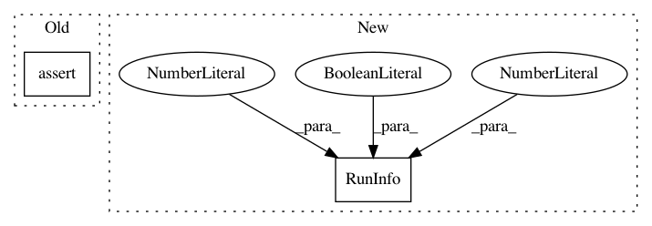

22d54408bf1bf47841a5798ebbeaba858f13fc76,test/test_tae/test_exec_tae_run.py,TaeTest,test_start_tae_return_abort,#TaeTest#Any#,56
Before Change
stats.start_timing()
eta = ExecuteTARun(ta=lambda *args: None, stats=stats)
self.assertRaises(
TAEAbortException, eta.start, config={}, instance=1, cutoff=30)
@mock.patch.object(ExecuteTARun, "run")
def test_start_crash_first_run(self, test_run):
"""
After Change
with self.assertRaises(TAEAbortException):
execute_ta_run_wrapper(
eta, RunInfo(
config=None, instance=1, instance_specific=None,
cutoff=30, seed=None, capped=False, budget=0.0
)
)
@mock.patch.object(ExecuteTARun, "run")
def test_start_tae_return_nan_inf(self, test_run):
In pattern: SUPERPATTERN
Frequency: 3
Non-data size: 2
Instances
Project Name: automl/SMAC3
Commit Name: 22d54408bf1bf47841a5798ebbeaba858f13fc76
Time: 2020-08-14
Author: 44504424+franchuterivera@users.noreply.github.com
File Name: test/test_tae/test_exec_tae_run.py
Class Name: TaeTest
Method Name: test_start_tae_return_abort
Project Name: automl/SMAC3
Commit Name: 22d54408bf1bf47841a5798ebbeaba858f13fc76
Time: 2020-08-14
Author: 44504424+franchuterivera@users.noreply.github.com
File Name: test/test_tae/test_exec_tae_run.py
Class Name: TaeTest
Method Name: test_crashed_cost_value
Project Name: automl/auto-sklearn
Commit Name: 8442321b9b7a7cef7e3806b525965c36cea1549e
Time: 2020-09-25
Author: feurerm@informatik.uni-freiburg.de
File Name: test/test_evaluation/test_evaluation.py
Class Name: EvaluationTest
Method Name: test_zero_or_negative_cutoff